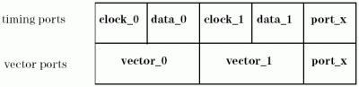
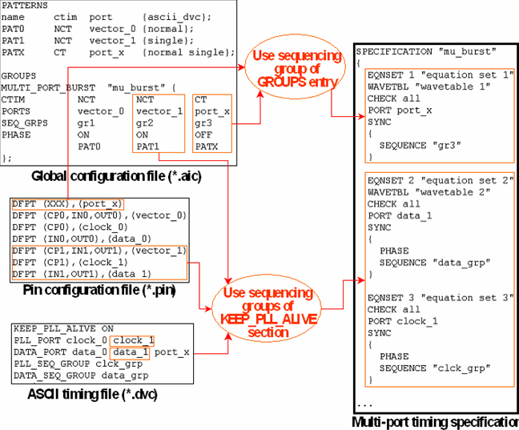

Using the KEEP_PLL_ALIVE Feature with a Multi-Port Vector Setup
Normally, the KEEP_PLL_ALIVE feature will be used with a single-port vector setup, where the default port @ is the only vector port, as illustrated by the figure in Setting Up a Continuous Clock with the KEEP_PLL_ALIVE Feature.
But it is also possible to make use of it in a multi-port vector setup. Its function remains the same in such a context, the only difference is that the default vector port is now replaced by a user defined port, which may not contain all pins. In particular, the feature continues to define a different timing for pins of one and the same vector port. For this reason, a port that is used as a clock port for a continuous clock setup cannot be used as a vector port in a multi-port burst.
You can define a continuous clock setup for several vector ports of the same multi-port burst. In this case you must specify a list of clock ports with the PLL_PORT keyword, and a list of data ports with the DATA_PORT keyword. Every vector port for which a continuous clock is to be defined must be partitioned by one of the data ports and one of the clock ports. Since the requirement that clock ports and data ports must constitute a partition of all pins also remains valid, you must add the vector ports for which no continuous clock is required to the list of the data ports.
The following figure displays such a setup graphically:

In this example, there are three vector ports. A continuous clock setup is established for two of them. The port port_x, which contains no clock pins, is used both as a timing port and as a vector port.
The following figure shows by two examples how ports and sequencing groups of the timing specification are determined in this setup:

The process is exemplified in the figure by the vector port vector_1. In the specification, this port is represented by its clock port and data port. Clock port and data port are determined by first looking up the pin configuration, and then the KEEP_PLL_ALIVE section.
The sequencing groups with which clock port and data port are associated are inferred from their role. The sequencing group that is specified in the MULTI_PORT_BURST statement of the global configuration file is ignored. In contrast, the sequencing group for port port_x, which is not partitioned into a clock port and a data port, is taken from the global configuration file.